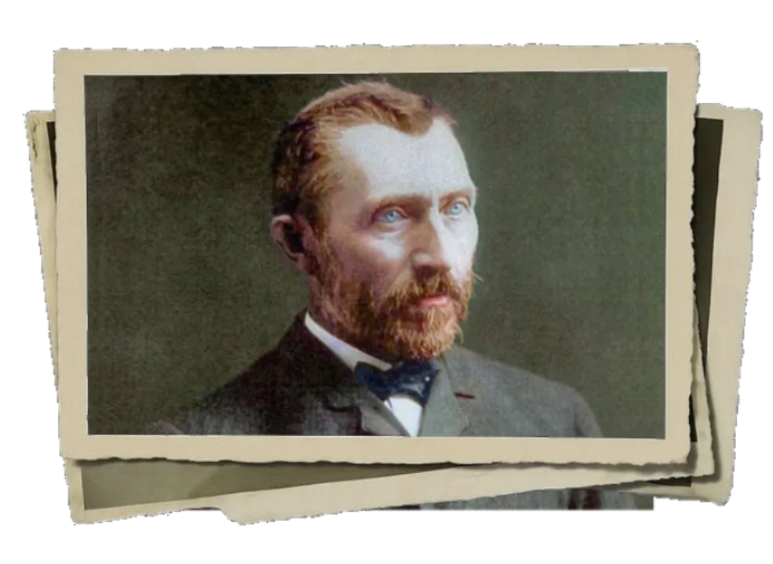
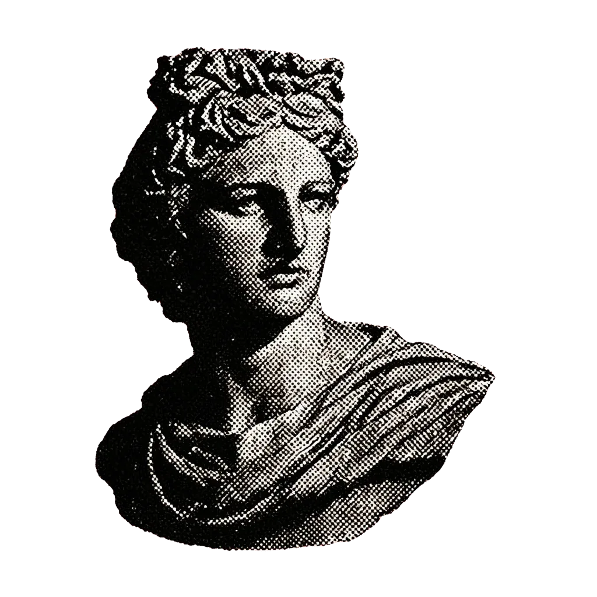
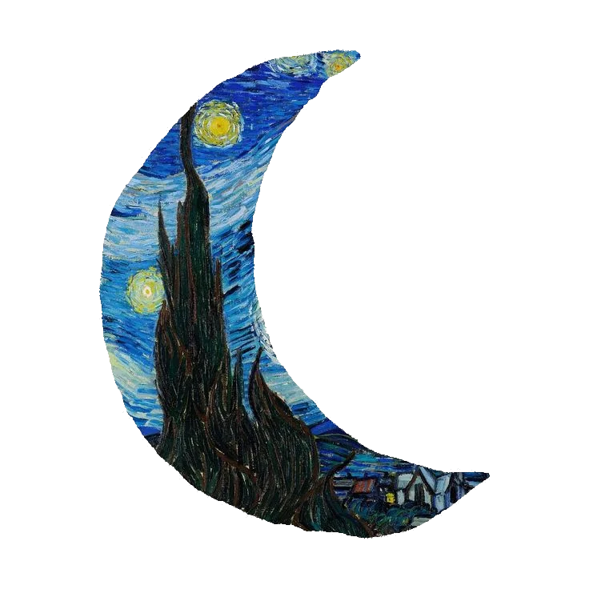
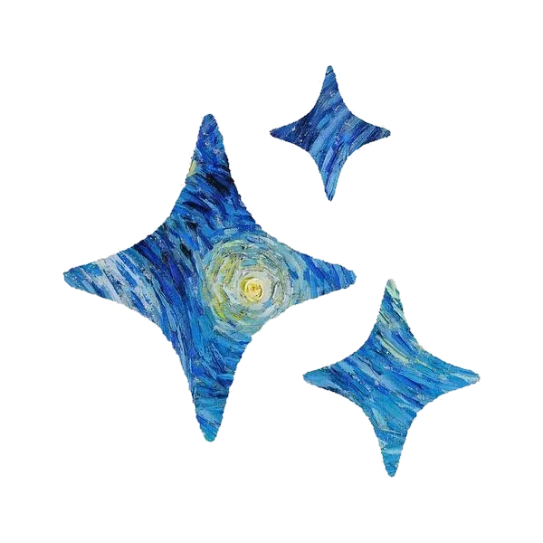
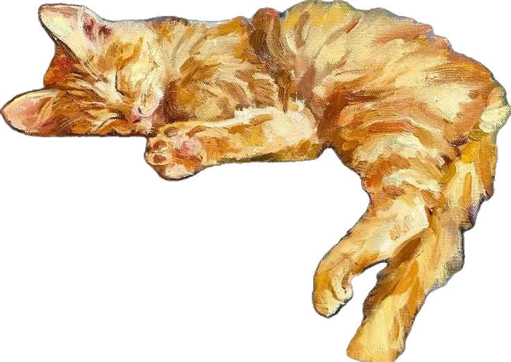
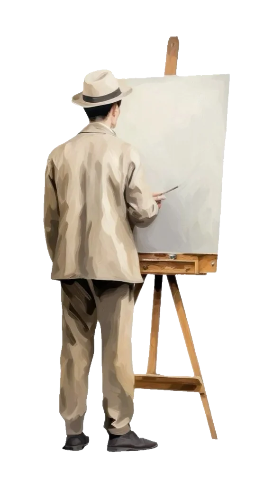
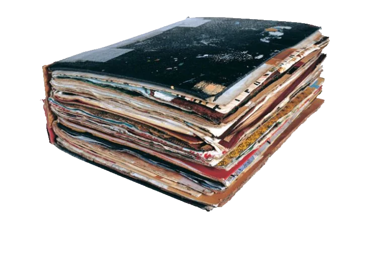
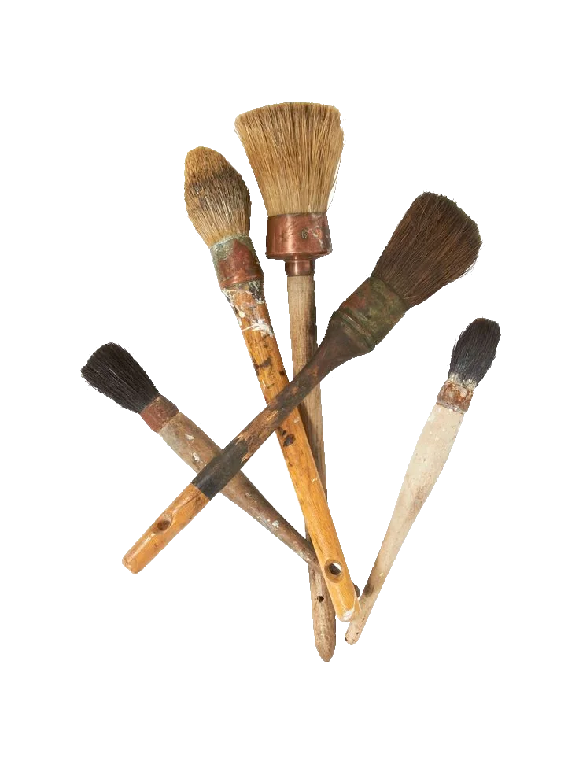
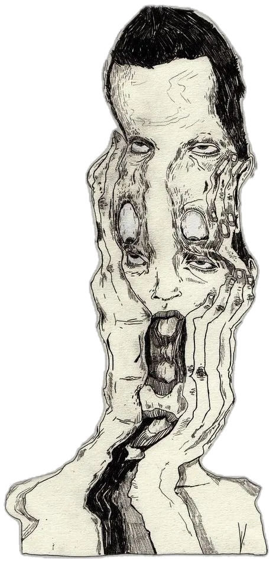

Van Gogh Jean-Michel Basquiat
Jean-Michel Basquiat







traços que habitam o tempo

artistas conhecidos
Aqui você encontra obras de artistas que marcaram a história da arte. São traços consagrados, nascidos de visões únicas que atravessaram gerações e continuam provocando admiração em quem os vê.
Cada obra carrega o peso e a leveza de quem dedicou a vida à arte — linhas e formas que resistiram ao tempo e seguem vivas até hoje.

Van Gogh
Jean-Michel Basquiat